Nieoficjalne wczesne ostrzeganie o zagrożeniach powietrznych. Aplikacja łączy kilka niezależnych źródeł, przydziela im punkty i ostrzega, gdy suma przekroczy próg — osobno dla każdego województwa.
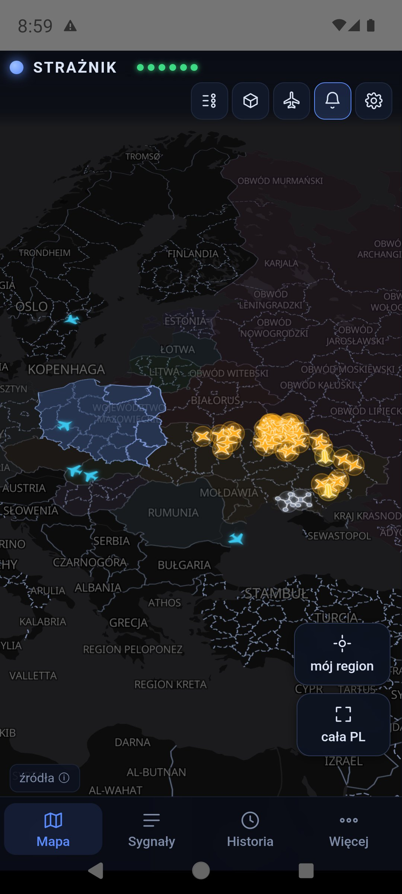
Strażnik to dodatkowy, wcześniejszy sygnał — nic więcej. Ma dać kilka minut przewagi, zanim zadziałają oficjalne kanały.
Żaden pojedynczy sygnał nie wywołuje alarmu. Dopiero zgodność kilku niezależnych źródeł podnosi wiarygodność.
Każdy punkt jest rozpisany: które źródło, jaki tytuł, o której godzinie, ile punktów dodało. Żadnej czarnej skrzynki.
Nie ma logowania, rejestracji ani zbierania danych o Tobie. Wybrane województwo zostaje na telefonie.
Domyślnie fuzję liczy serwer Strażnika, a alarmy przychodzą jako push — lżej dla telefonu i baterii. Gdy serwer jest niedostępny, telefon przełącza się na własny silnik i liczy sam.
Aplikacji nie ma w Google Play — instalujesz plik APK ręcznie. Android zapyta o zgodę, bo źródło jest „nieznane".
Straznik.apk
Z najnowszego wydania — prosto na telefon albo na komputer i przez kabel/chmurę na telefon.
Pobieranie staje na 100% i nie kończy? Najczęstsza przyczyna: masz zainstalowaną aplikację GitHub, która przechwytuje link i sama próbuje pobrać plik — po czym się zacina. Przytrzymaj link dłużej i wybierz „Otwórz w przeglądarce”, albo skorzystaj z linku zapasowego, który pobiera ten sam plik prosto z repozytorium. Zanim spróbujesz ponownie, sprawdź folder Pobrane — plik o rozmiarze około 4,8 MB bywa już kompletny mimo zawieszonego paska.
Menedżer plików → Pobrane → Straznik.apk. Android wyświetli
ekran instalacji.
Przy pierwszej takiej instalacji system pokaże ostrzeżenie i przycisk „Ustawienia". Włącz zgodę dla przeglądarki lub menedżera plików, wróć i potwierdź instalację.
Google pokaże komunikat, że nie zna aplikacji tego dewelopera. To normalne dla każdej aplikacji spoza sklepu Play — nie oznacza, że plik jest zainfekowany, tylko że Google nie widziało go wcześniej u wielu użytkowników. Dotknij „Więcej szczegółów”, a potem „Zainstaluj mimo to”.
Ikona tarczy z sygnałem radarowym pojawi się na liście aplikacji.
Przy pierwszym starcie Android zapyta o uprawnienie. Bez tej zgody nie zobaczysz żadnych alertów — powiadomienia są głównym sposobem ostrzegania.
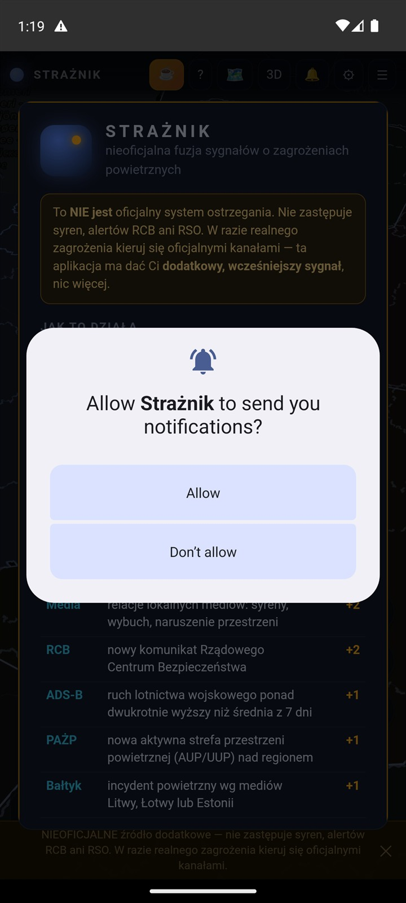
Najpierw otwiera się ekran „O aplikacji" z wyjaśnieniem zasad działania i ostrzeżeniem, że źródło jest nieoficjalne. Na wierzchu Android pyta o zgodę na powiadomienia — wybierz Allow / Zezwól.
Ekran „O aplikacji" pokazuje się tylko raz. Później wracasz do niego przyciskiem ? w górnym pasku.
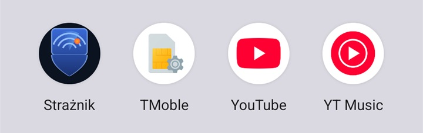
Aplikacja działa od razu, ale warto ustawić dwie rzeczy: swoje województwo i powiadomienia. Wszystko jest pod przyciskiem ⚙.
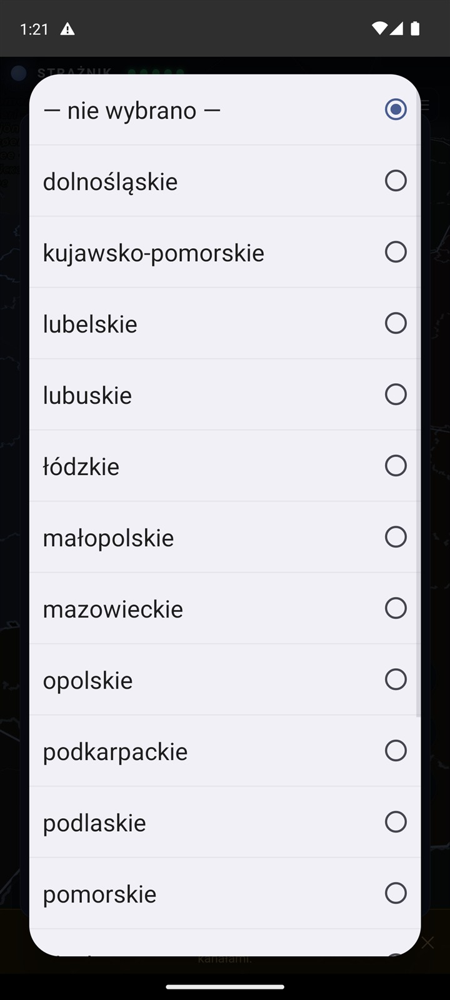
To najważniejsze ustawienie. Decyduje o dwóch rzeczach:
Alternatywnie 📍 Wykryj z GPS ustawi województwo automatycznie. Lokalizacja nie jest nigdzie wysyłana.
Alarmy dla Twojego województwa przychodzą jako powiadomienie push z serwera — także przy zamkniętej aplikacji, wygaszonym ekranie i po restarcie telefonu. Nie trzeba już usługi działającej w tle.
Wystarczy wybrać województwo i zezwolić na powiadomienia. Dla czerwonego alarmu włącz też zgodę na alarm pełnoekranowy (poniżej).
Przyciski poniżej pomagają, gdy alarmy nie dochodzą:
Trzy przyciski testowe odtwarzają dokładnie to, co usłyszysz przy realnym zdarzeniu: Test: uwaga (krótki sygnał żółtego poziomu), Test: syrena (modulowana syrena alarmu powietrznego), Test: pełny alarm (syrena + wibracja + ekran alarmu). Przetestuj je raz, żeby wiedzieć, czego się spodziewać.
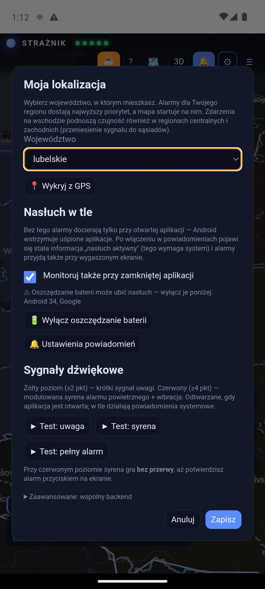
Cały obraz sytuacji na jednym ekranie: które regiony są spokojne, gdzie coś się dzieje i co dokładnie leci.
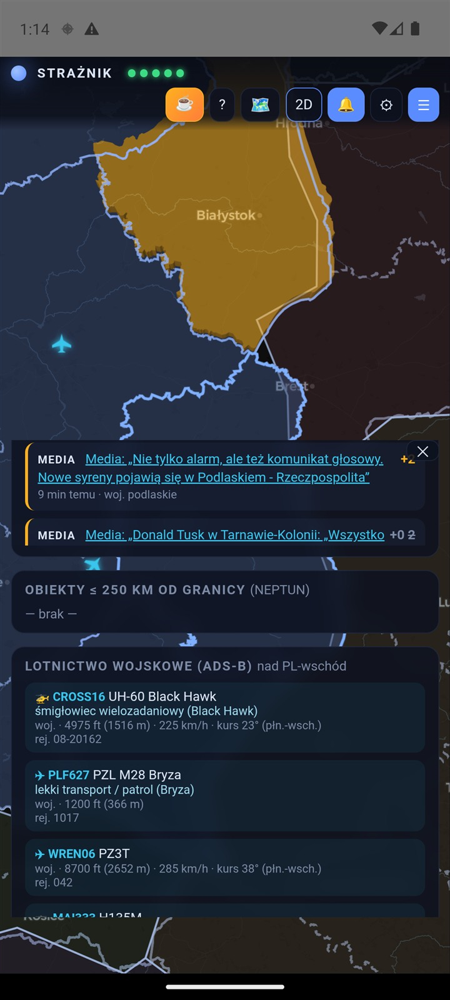
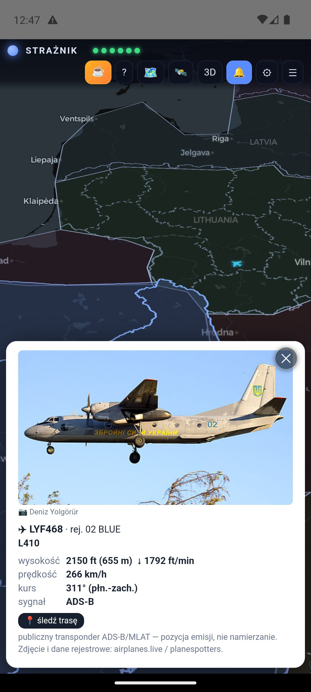
Na wąskich ekranach podpisy zwijają się do samych ikon — poniżej wszystkie w jednym miejscu.
| Ikona | Funkcja | Co robi |
|---|---|---|
| 🔵 | Kropka + STRAŻNIK | Logo. Obok sześć diod stanu źródeł danych — zielona znaczy, że źródło odpowiada. |
| ☕ | Postaw kawę | Dobrowolne wsparcie autora przez buycoffee.to. Aplikacja jest i pozostanie darmowa. |
| ❓ | O aplikacji | Pełne wyjaśnienie zasad działania: tabela punktacji, poziomy, spis funkcji i uczciwa lista ograniczeń. |
| 🗺️ | Legenda | Znaczenie każdego symbolu i koloru na mapie. |
| 3D | 3D / 2D | Przełącza między mapą z wytłaczanymi bryłami i płaską. |
| 🔔 | Powiadomienia | Włącza powiadomienia push (w przeglądarce — Web Push; w aplikacji — kanały systemowe Androida). |
| ⚙️ | Ustawienia | Województwo, zgody na powiadomienia i alarm pełnoekranowy, testy dźwięków, opcjonalny serwer. |
| ☰ | Panel sygnałów | Wysuwa panel z punktacją województw, listą sygnałów, obiektami przy granicy i lotnictwem wojskowym. |
| Ikona | Funkcja | Co robi |
|---|---|---|
| ⏱️ | Historia 12 godzin | Otwiera suwak czasu — możesz przewinąć sytuację wstecz co 2 minuty. |
| ◎ | Mój region | Wraca do województwa wybranego w ustawieniach. |
| ⤢ | Cały obszar | Oddala widok na całą Polskę razem z Ukrainą i Bałtykiem. |
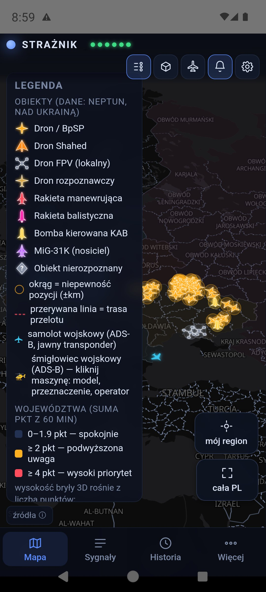
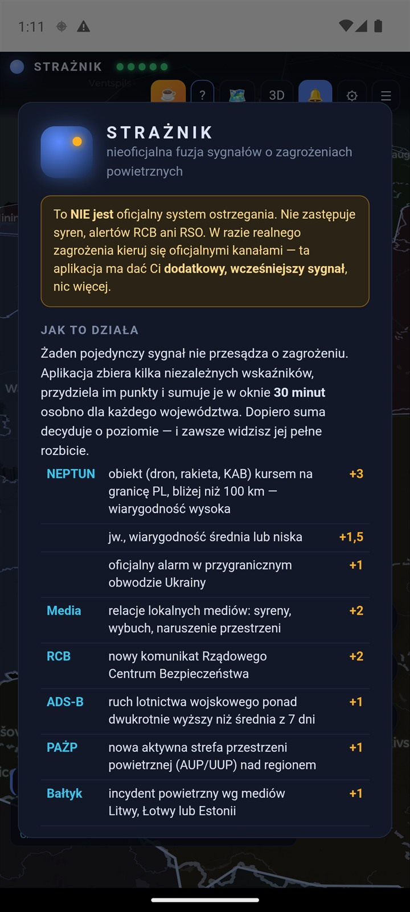
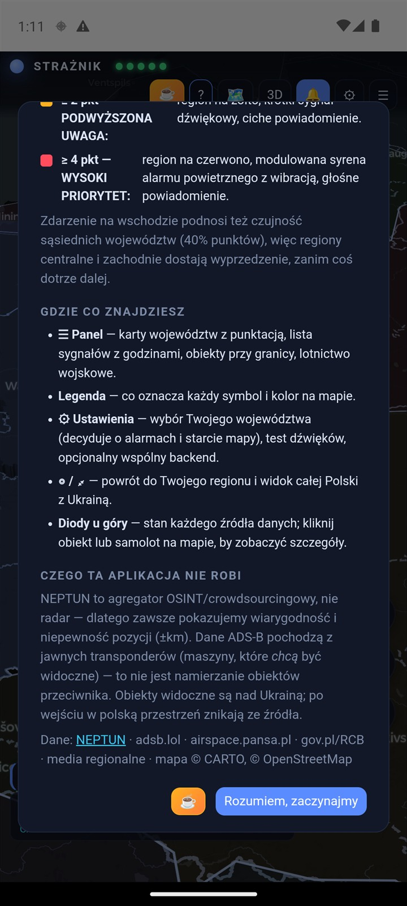
Tu sprawdzasz, dlaczego region ma tyle punktów. Otwierasz przyciskiem ☰ albo dotykając województwa na mapie.
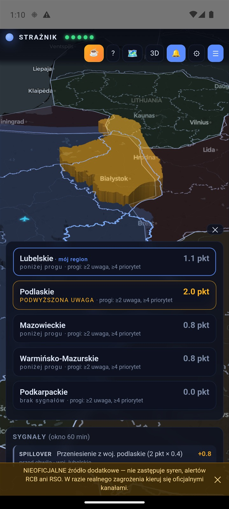
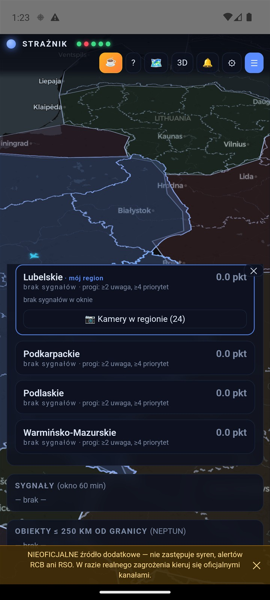
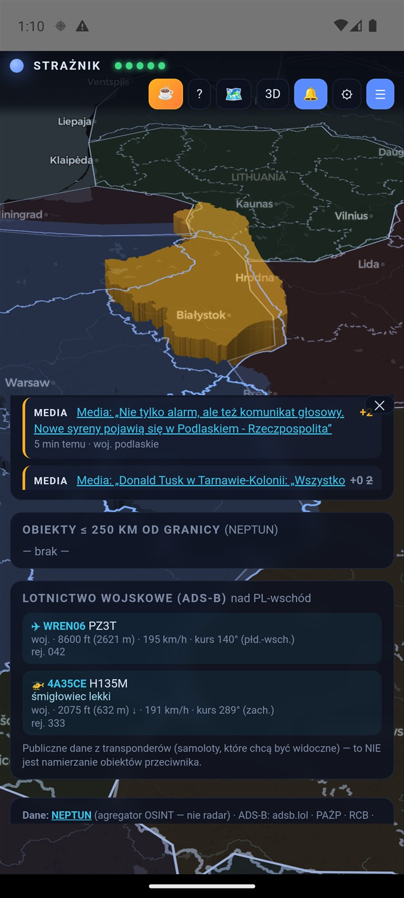
| Etykieta | Znaczenie |
|---|---|
NEPTUN | Obiekt powietrzny nad Ukrainą lecący w stronę granicy Polski, albo oficjalny alarm w przygranicznym obwodzie. |
MEDIA | Artykuł lokalnych mediów ze słowami kluczowymi (syreny, alarm powietrzny, naruszenie przestrzeni). Tytuł jest linkiem do źródła. |
RCB | Nowy komunikat Rządowego Centrum Bezpieczeństwa z gov.pl. |
ADSB | Ruch lotnictwa wojskowego nad regionem ponad dwukrotnie wyższy niż o tej samej porze doby w ostatnich 7 dniach. |
PANSA | Nowo aktywowana strefa przestrzeni powietrznej (AUP/UUP) nad regionem. |
NEIGHBOURS | Aktywne zamknięcie przestrzeni u sąsiada NATO (Rumunia płn., Estonia, Litwa) — sygnał obserwacyjny, niski. Tylko w trybie serwerowym. |
SPILLOVER | Przeniesienie punktów z sąsiedniego województwa — patrz punktacja. |
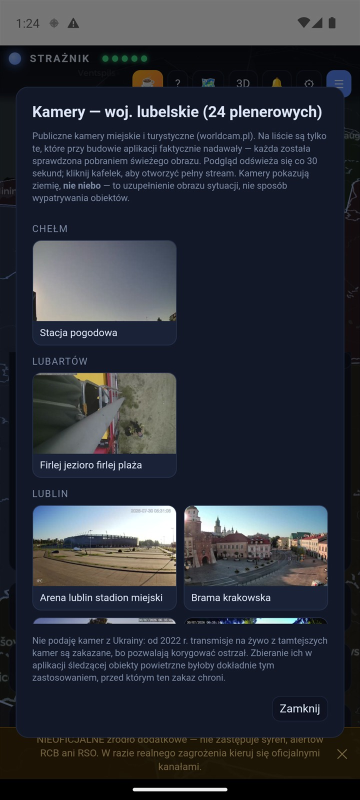
641 publicznych kamer miejskich i turystycznych (worldcam.pl) we wszystkich 16 województwach, pogrupowanych po miastach. Każda została sprawdzona pobraniem świeżego obrazu przy budowie listy — na liście nie ma martwych linków.
Podgląd odświeża się co 30 sekund, dotknięcie kafelka otwiera pełny stream. Kamery plenerowe są na wierzchu, transmisje wnętrzowe schowane pod rozwijaną sekcją.
Kamery pokazują ziemię, nie niebo — to uzupełnienie obrazu sytuacji (czy na ulicach coś się dzieje), nie sposób wypatrywania obiektów.
Kamer z Ukrainy celowo nie ma: od 2022 r. transmisje na żywo są tam zakazane, bo pozwalają korygować ostrzał.
Przycisk ⏱ otwiera suwak czasu. Migawki zapisują się co 2 minuty, więc możesz zobaczyć, jak sytuacja narastała.
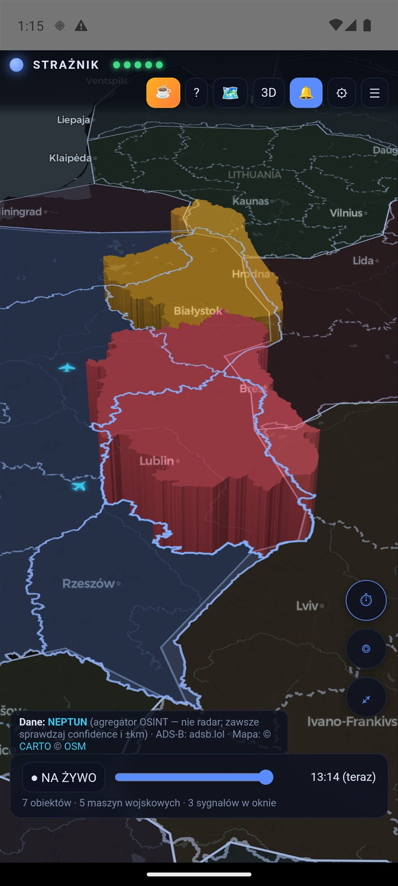
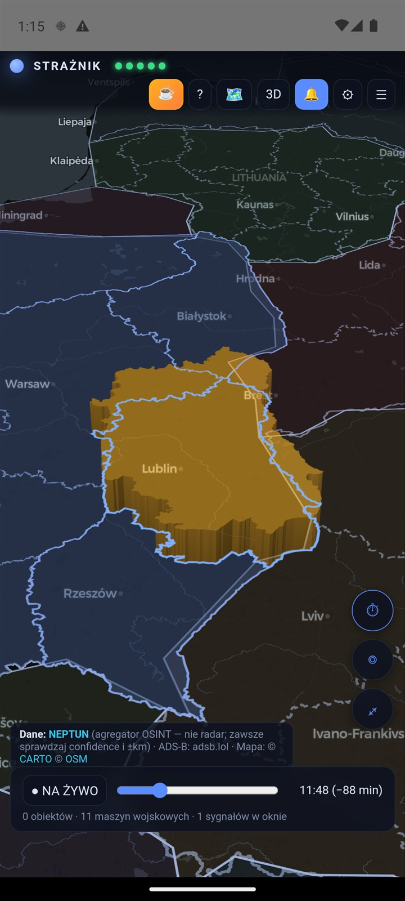
Przy wysokim priorytecie (≥ 4 pkt) aplikacja przerywa wszystko: pełny ekran, modulowana syrena alarmu powietrznego i wibracja.
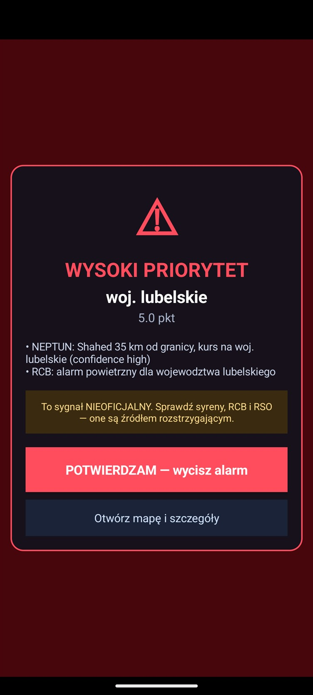
Czerwony alarm zapala ekran, pokazuje się nad blokadą i miga — nie musisz odblokowywać telefonu ani mieć otwartej aplikacji. Syrena gra w pętli, telefon wibruje, alarm nie zniknie sam.
Działa też wtedy, gdy system zdążył wcześniej zamknąć aplikację — alarm przychodzi jako powiadomienie push z serwera (FCM), a ekran alarmu jest natywny, więc nie czeka na załadowanie mapy.
Przy poziomie żółtym (≥ 2 pkt) jest znacznie spokojniej: krótki sygnał dźwiękowy i ciche powiadomienie, bez przejmowania ekranu.
| Poziom | Dźwięk i wibracja | Ekran |
|---|---|---|
| Brak / poniżej progu < 2 pkt |
Cisza — żadnego powiadomienia. Sygnały (jeśli są) widać na mapie i w panelu po otwarciu aplikacji. | Nic się nie dzieje. |
| ≥ 2 pkt — żółty | Dwutonowy sygnał uwagi (740↔988 Hz) i krótka wibracja. | Nie budzi ekranu — to ostrzeżenie, nie alarm. Zwykłe powiadomienie. |
| ≥ 4 pkt — czerwony | Modulowana syrena alarmu powietrznego (380↔860 Hz) w pętli plus wibracja, aż do potwierdzenia. Przebija tryb cichy. | Zapala ekran, pokazuje pełnoekranowy migający alarm nad blokadą. |
scripts/build_sounds.py) do plików,
z których korzysta warstwa natywna. Chcesz je usłyszeć zawczasu?
⚙ → Test: uwaga / Test: syrena / Test: pełny alarm.
Alarm ma sens, gdy dochodzi także wtedy, gdy nie patrzysz na telefon — dlatego Strażnik wysyła je jako powiadomienia push.
Fuzję sygnałów liczy serwer Strażnika. Gdy poziom dla Twojego województwa rośnie, serwer wysyła powiadomienie push prosto na telefon — dociera nawet przy zamkniętej aplikacji, wygaszonym ekranie i w trybie oszczędzania. Nie ma już stałego powiadomienia „nasłuch aktywny" ani usługi działającej w tle (Android 15/16 i tak ją ubijał; push jest niezawodniejszy i lżejszy dla baterii).
Warunek: wybierz w ustawieniach swoje województwo (telefon zapisuje się wtedy na powiadomienia o tym regionie) i zezwól na powiadomienia.
Jeśli mapa się nie ładuje i wszystkie albo prawie wszystkie diody źródeł świecą na czerwono, mimo że internet działa, to najczęściej antywirus skanujący HTTPS (Avast, AVG, Kaspersky, ESET). Taki program podstawia w miejsce oryginalnego certyfikatu swój własny, a starsze wydania ufały wyłącznie certyfikatom systemowym i odrzucały wszystko.
Od wersji 1.4.2 aplikacja ufa też certyfikatom antywirusa i proxy, więc działa z włączoną ochroną — nie musisz jej wyłączać. Jeśli widzisz ten objaw, zaktualizuj aplikację.
Fuzja liczy punkty dla wszystkich 16 województw i stosuje to samo przeniesienie do sąsiadów co mapa, ale push dostajesz o swoim regionie — gdyby powiadamiał o każdym z 16, telefon dzwoniłby przy zdarzeniach po drugiej stronie kraju. Zdarzenie na wschodzie i tak Cię dosięgnie, bo podnosi punktację Twojego województwa proporcjonalnie do odległości.
Jeśli nie wybierzesz województwa, aplikacja pilnuje czterech przygranicznych: lubelskiego, podkarpackiego, podlaskiego i warmińsko-mazurskiego.
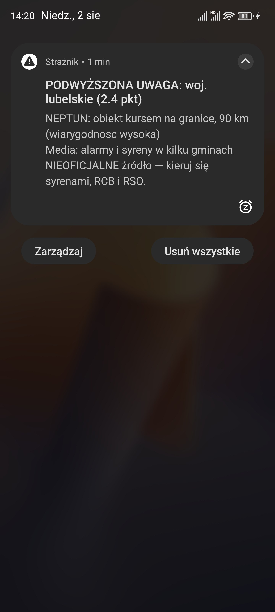
Aplikacja sumuje punkty w oknie 60 minut, osobno dla każdego województwa. Przez pierwsze 30 minut sygnał liczy się w pełni, potem jego waga spada liniowo do zera. Dopiero suma decyduje o poziomie.
| Źródło | Warunek | Pkt |
|---|---|---|
| NEPTUN | Obiekt kursem na granicę PL, bliżej niż 250 km. Punkty zależą od tego, co leci (balistyczna 3,0 · MiG-31K 2,6 · manewrująca 2,4 · KAB 1,8 · Shahed 1,4 · dron 1,1 · zwiadowczy 0,5 · FPV 0), ile tego jest (pierwiastek z liczby), jak blisko (<30 km ×1,6 · <60 ×1,3 · <100 ×1,0 · <150 ×0,55 · <250 ×0,25) i jak pewna jest obserwacja (wiarygodność, liczba niezależnych zgłoszeń, status) | 0–8 |
| Oficjalny alarm powietrzny w przygranicznym obwodzie Ukrainy (wołyński, lwowski, zakarpacki, rówieński). Serwer bierze go na bieżąco z WebSocketu Neptuna | +1 | |
| Media | Relacje lokalnych mediów: syreny, wybuch, naruszenie przestrzeni powietrznej. Sam pojedynczy artykuł nie alarmuje — próg przekracza dopiero potwierdzenie (drugie medium albo inna klasa źródła) | +1,5 |
| RCB | Oficjalny Alert RCB — ten sam, który przychodzi SMS-em (aplikacja czyta go z Regionalnego Systemu Ostrzegania) — albo nowy komunikat RCB na gov.pl | +2 |
| ADS-B | Ruch lotnictwa wojskowego nad regionem ponad dwukrotnie wyższy niż o tej samej porze doby w ostatnich 7 dniach | +1 |
| PAŻP | Rzadka strefa ADHOC/R/NPZ/D obejmująca całą kolumnę od ziemi w górę. Rutynowe TRA/TSA/MRT/ATZ oraz designatory powtarzane w ciągu 7 dni nie punktują | +0,5 |
| Bałtyk | Incydent powietrzny wg mediów Litwy, Łotwy lub Estonii → podlaskie i warmińsko-mazurskie | +1 |
| Sąsiedzi | Aktywne zamknięcie przestrzeni powietrznej u sąsiada NATO (Rumunia płn., Estonia, Litwa) — sygnał obserwacyjny, wyprzedzający | +0,3 |
Sama odległość niewiele mówi. Te same 130 km to około 10 minut dla rakiety manewrującej i około 45 minut dla drona. Dlatego przy każdym obiekcie aplikacja pokazuje czas — osobno do granicy Polski i do Twojego województwa, bo ktoś pod Warszawą ma zupełnie inny zapas niż ktoś przy granicy.
| Obiekt 130 km od granicy | Prędkość typowa | Czas do granicy |
|---|---|---|
| dron / Shahed | 180 km/h | ~45 min |
| rakieta manewrująca | 800 km/h | ~10 min |
| rakieta balistyczna | 3000 km/h | ~3 min |
Od wyliczonego czasu aplikacja odejmuje 2,5 minuty — bufor wynikający z pomiaru opóźnienia źródła. Przy znanym lub wiarygodnie wyliczonym kursie, co najmniej dwóch potwierdzeniach i średniej/wysokiej pewności uruchamia żółty alarm przy ≤10 min oraz czerwony przy ≤5 min. Brak kursu, niska pewność albo pojedyncze zgłoszenie nie uruchomią alarmu ETA.
Media maks. 2 pkt, RCB 2, ADS-B 1, PAŻP 1, sąsiedzi 0,6. Pięć artykułów o tym samym zdarzeniu to jedno potwierdzenie — nadwyżka jest widoczna w panelu z przekreśloną punktacją.
Słowa mocne („zawyły syreny", „alarm powietrzny", „naruszenie przestrzeni") wystarczą same. Słabe („dron", „rakieta") wymagają co najmniej dwóch różnych trafień. Kontekst administracyjny („wymiana syren", „przetarg", „próba syren") wyklucza dopasowanie.
Sygnał traci wagę, im jest starszy, aż wypadnie z okna. Stare zdarzenia nie podtrzymują sztucznie wysokiej punktacji.
Region z sumą ≥ 2 pkt dzieli się swoim wynikiem z sąsiadami, ci ze swoimi sąsiadami i tak dalej. Każdy kolejny krąg dostaje 40 % tego, co poprzedni, licząc po najkrótszej drodze od zdarzenia. Dzięki temu zagrożenie na ścianie wschodniej podnosi czujność w całym kraju, ale proporcjonalnie do odległości — centrum mocno, zachód symbolicznie.
Tak rozkłada się alarm 5 pkt w województwie lubelskim:
| Krąg | Województwa | Wkład |
|---|---|---|
| źródło | lubelskie | 5,0 |
| 1. sąsiedzi | podkarpackie, świętokrzyskie, mazowieckie, podlaskie | +2,0 |
| 2. krąg | małopolskie, łódzkie, śląskie, warmińsko-mazurskie, kujawsko-pomorskie | +0,8 |
| 3. krąg | wielkopolskie, opolskie, pomorskie | +0,3 |
| 4. krąg | dolnośląskie, lubuskie, zachodniopomorskie | +0,1 |
Pierwszy krąg przekracza próg 2 pkt, więc sąsiedzi zapalają się na żółto i dostają powiadomienie. Dalsze kręgi dostają punkty widoczne na mapie i w panelu, ale bez alarmu — bo dron nad Chełmem realnie nie zagraża Wrocławiowi. Gdy jednak zdarzeń jest kilka naraz, ich wkłady się sumują i próg może zostać przekroczony także dalej na zachód.
W panelu każdy taki wkład jest osobnym wpisem
SPILLOVER — Przeniesienie z woj. X (… pkt, 2. krąg), więc zawsze
wiadomo, skąd wziął się sygnał i jak daleko podróżował.
Najważniejsze rzeczy, które doszły przez ostatnie tygodnie — wszystkie działają od razu, bez ustawiania czegokolwiek.
Przy obiekcie widzisz, ile minut zostało do granicy i do Twojego województwa — a nie tylko ile to kilometrów.
Aplikacja czyta prawdziwe Alerty RCB (te wysyłane SMS-em) z Regionalnego Systemu Ostrzegania — wcześniej ich nie widziała.
Nie są już pomijane. Kurs jest wyliczany z ruchu obiektu, a gdy się nie da — obiekt blisko granicy i tak się liczy, z ostrożnościową karą.
Polskie nazwy źródeł, wyraźne punkty, wiek i waga sygnału, odległość i czas. Panel nie zwija się już sam.
Nazwy państw i miejscowości po polsku, Polska wyróżniona spokojnym błękitem, czytelne granice.
Gdy serwer chwilowo nie odpowiada, aplikacja liczy sama, a po jego powrocie wraca na serwer automatycznie.
Znajomość ograniczeń jest częścią instrukcji. Narzędzie, któremu ufa się bezkrytycznie, jest groźniejsze niż jego brak.
Domyślnie aplikacja korzysta z serwera Strażnika (a gdy jest on niedostępny, liczy sama na telefonie) — nie musisz nic konfigurować. Ta sekcja dotyczy tylko osób, które chcą uruchomić własny backend, np. w domowej sieci.
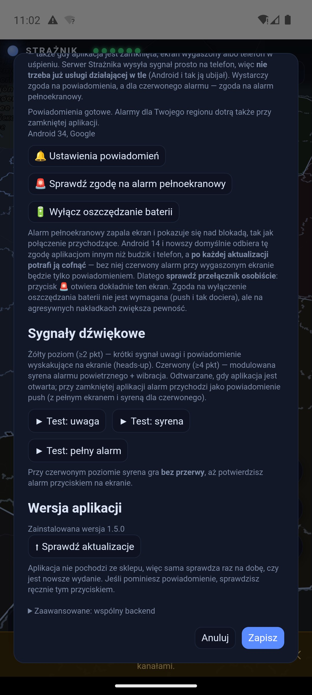
Uruchom backend na komputerze (instrukcja w repozytorium), a w aplikacji
wejdź w ⚙ → Zaawansowane: wspólny backend i podaj adres,
np. http://192.168.1.10:8600. Puste pole = tryb wbudowany.
Komputer i telefon muszą być w tej samej sieci lokalnej.